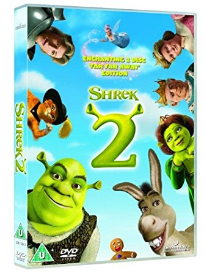
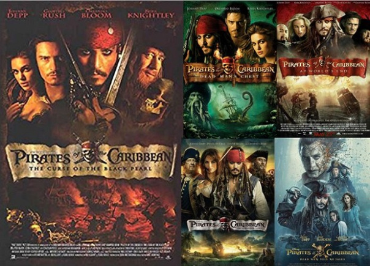
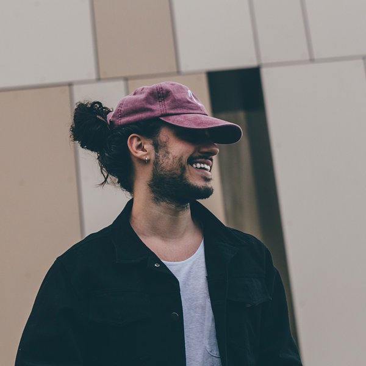

I was born in Los Angeles, I live with my mom and dad. I moved to Bakersfiled when I was two years old with my parents and older sister, and ever since then I have lived here.
In my family there is my mom Guadalupe, my dad Samuel, my sister Veronica, and my dogs
Growing up, I lived in a house that had two other houses attached so in total there was three houses they were all seperated. I don't really know how to explain it. In the house that my grandparents own, my grandparents, my tia, her husband and her four kids.
Then of course my parents, my older sister and I lived there. Growing up with them, I made some memorable memories, and til this day my tia that is also my godmother her family, my grandparents, and my family are close. Eventhough we live in sperate houses now.
We moved out of the house in the summer of 7 grade going into 8. Ever since then I have lived in the house that I live in today.
My favorite color has always been blue.
When I graduate from high school I hope to study in the cosmetology field. I have had my mindset on this for a couple of years now and that's what I want to do.
I also want to start my own bussiness. When I start my bussiness I want it to be hair and make-up, maybe through the years I'll add more, but for the start I just want it simple.
| Somethings that I like to do are... |
|---|
| play with my dogs |
| watch movies with my mom |
| hang out with my friends |
watch YouTube videos |
| look at conspiracy theories |
| Some of my favorite movies are... |
|---|
| Shrek  |
| High School Musical |
| Pirates of the Carribeans  |
Dunkirk  |
| Some of my favorite artist are... |
|---|
| Selena Gomez |
| Twenty-One Pilots |
| Russ  |
| Maluma |